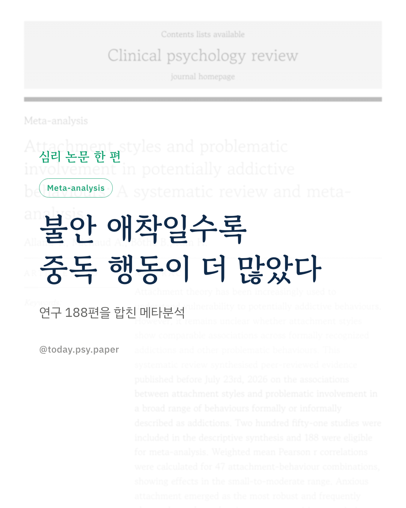
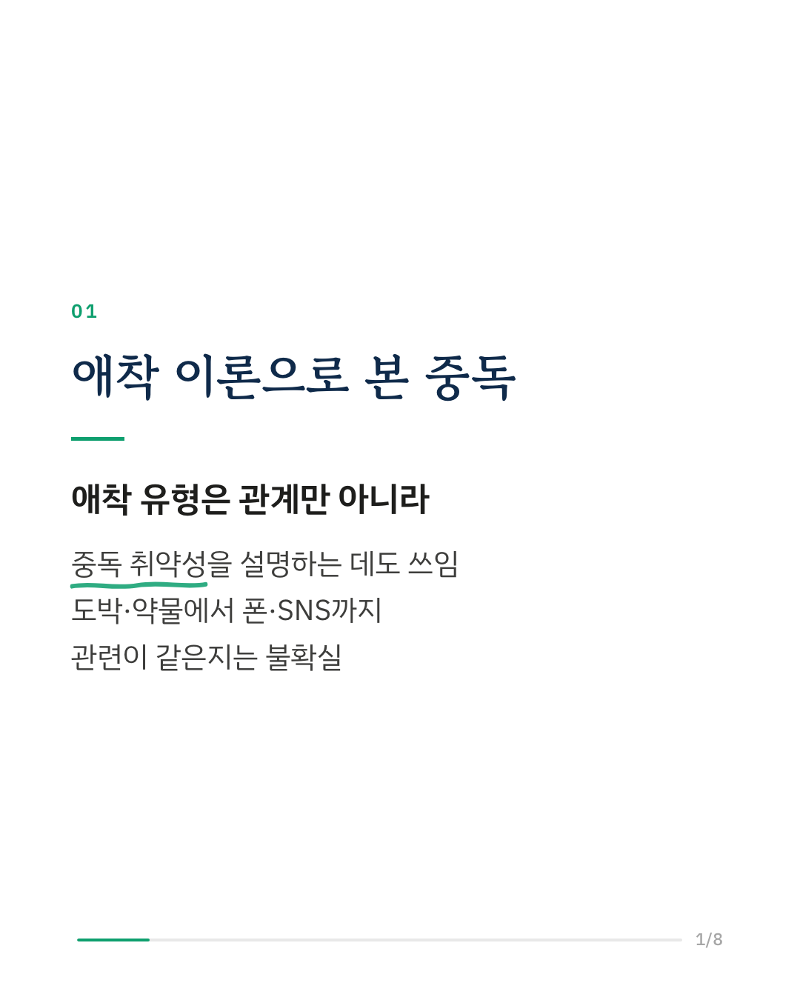
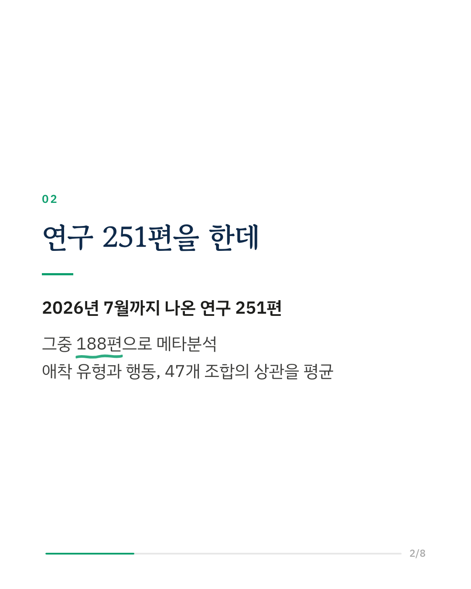
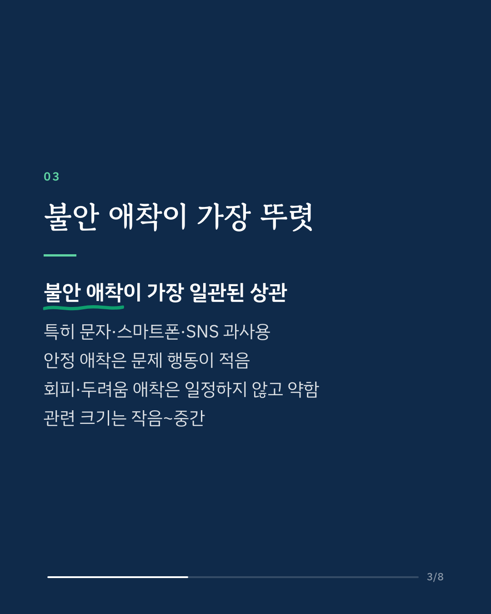
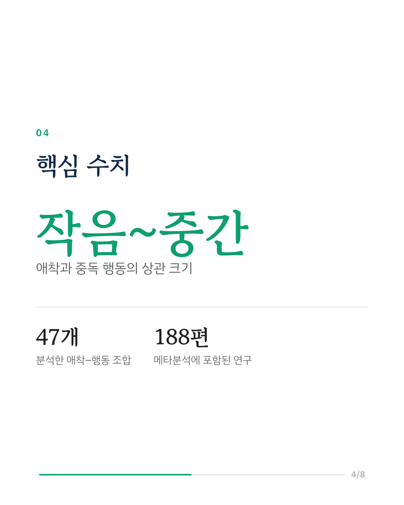
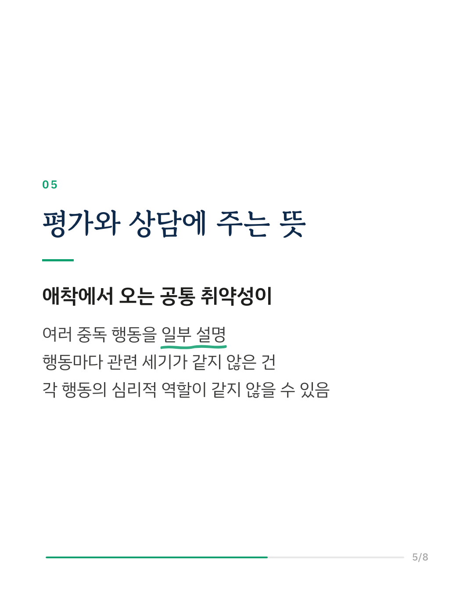
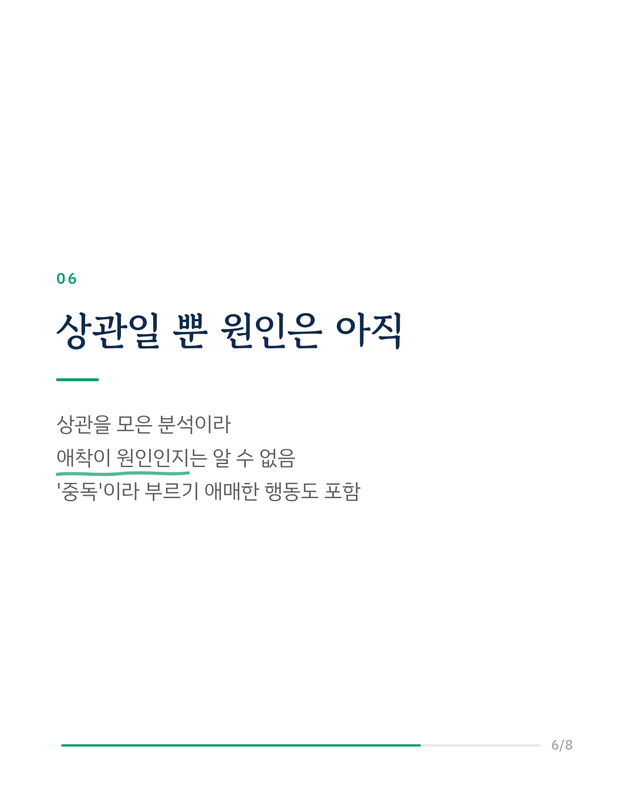
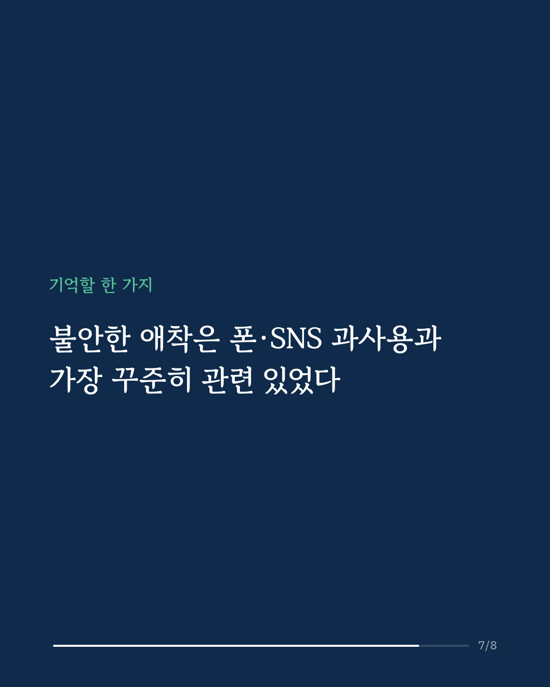
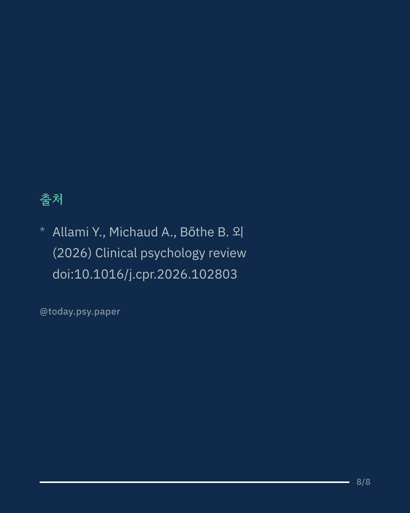

불안한 애착을 가진 사람이 스마트폰 중독이나 SNS 과사용에 더 취약하다는 연구가 꾸준히 나왔습니다. 그런데 도박·약물처럼 공식 진단이 있는 중독과, 폰·SNS처럼 비공식적으로 '중독'이라 불리는 행동에서 애착의 역할이 같은지는 분명하지 않았습니다. 이 연구는 2026년 7월까지 발표된 연구 251편을 모아 정리하고, 그중 188편으로 메타분석을 했습니다. 애착 유형과 중독 행동의 47개 조합에서 상관을 평균했습니다. 불안 애착이 가장 일관되게 문제 행동과 관련이 있었습니다. 특히 문자 메시지, 스마트폰, SNS의 문제적 사용과 상관이 상대적으로 컸습니다. 안정 애착은 대체로 문제 행동이 적은 것과 관련이 있었고, 회피 애착과 두려움 애착은 행동에 따라 패턴이 일정하지 않고 상관도 약했습니다. 전체 상관 크기는 작은 편에서 중간 정도 사이였고, 연구 간 결과의 편차는 낮았습니다. 연구자들은 애착과 연결된 공통의 심리적 취약성이 여러 중독 행동을 일부 설명할 수 있다고 봅니다. 행동마다 관련의 세기와 모양이 같지 않았으므로, 각 행동이 사람에게 하는 심리적 역할도 서로 같지 않을 수 있다고 해석합니다. 한계로, 상관을 모은 분석이라 애착이 원인인지 결과인지는 알 수 없고, '중독'이라 부르기 애매한 행동까지 넓게 포함했습니다. Clinical Psychology Review (2026), 'Attachment styles and problematic involvement in potentially addictive behaviours: A systematic review and meta-analysis' DOI: 10.1016/j.cpr.2026.102803 #임상심리 #정신건강정보 #심리학연구 #논문리뷰 #애착유형 #불안애착 #스마트폰중독 #행동중독
python3 publish.py 42833182